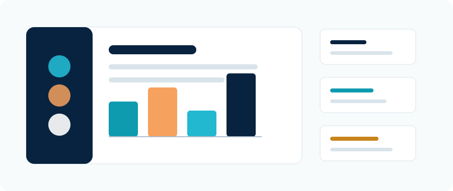

Data Analysis
Dataset cleaning, coding, tables, charts and interpretation support using Excel, SPSS or Python.
Research support for data analysis, document formatting, technical diagrams, presentation design and technical project support, delivered with clear scope and ethical boundaries.
Services are matched to the research level, available files, required format and deadline.
Dataset cleaning, coding, tables, charts and interpretation support using Excel, SPSS or Python.
Headings, margins, page numbering, tables, figures, references and final Word/PDF preparation.
Architecture diagrams, UML, flowcharts, process diagrams and research-framework visuals.
Defence slides, seminar presentations and result summaries with clearer structure and visuals.
Debugging, implementation guidance and technical support for computer-science projects and prototypes.
Focused sessions for research tools, analysis interpretation, formatting and technical project planning.
MAFUBAM supports legitimate academic and professional work: data cleaning, analysis, formatting, diagrams, presentation design, programming guidance and tutoring.
MAFUBAM does not fabricate data, impersonate students, write examinations or guarantee academic outcomes.
Public samples are anonymised, cropped or recreated so the quality of the work can be inspected without exposing private academic material.

Clean charts, frequency tables, summary statistics, heatmaps and interpreted outputs prepared for chapter four or technical reports.

System architecture, process flow, conceptual framework, UML and methodology diagrams redrawn for clean academic presentation.

Before-and-after style samples showing heading hierarchy, page numbering, tables, figures, references and PDF-ready output.

Slide structures for background, method, findings, conclusion and recommendations with clean visuals and clear presentation flow.